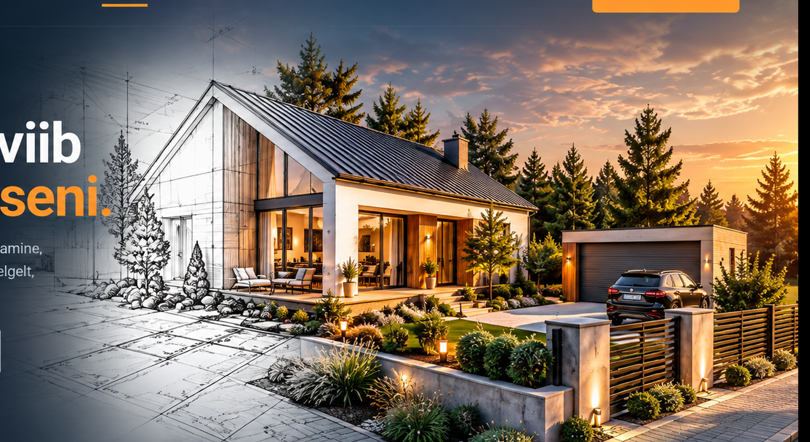

Arhitektuursed projektid
Üksikelamud, paarismajad, ridaelamud, abihooned ja muud hooned.
EHR PROJEKTID OÜ
Arhitektuurne projekteerimine, hoonete seadustamine, teede projekteerimine ja omanikujärelevalve – selgelt, korrektselt ja praktiliselt.

EHR Projektid aitab uue hoone ideest, olemasoleva hoone seadustamisest või teedeprojektist jõuda korrektse dokumentatsiooni ja teostatava lahenduseni.
Meie töö keskmes on praktiline ja arusaadav koostöö – vaatame koos üle lähteandmed, vajadused ja järgmised sammud ning koostame vajaliku projektlahenduse.
Arhitektuursed projektid, hoonete seadustamine, teede projekteerimine, omanikujärelevalve ning realistlikud visualiseeringud.
Üksikelamud, paarismajad, ridaelamud, abihooned ja muud hooned.
Aitame koostada vajalikud projektid ja dokumendid ning esitame teie eest ehitusloa taotlused, ehitusteatised ja muud vajalikud menetlused.
Teede, tänavate, parkimisalade ja muu liiklusruumi projekteerimine ning tehniliste lahenduste koostamine.
Ehitustööde kvaliteedi, projektile vastavuse ja ehitusprotsessi jälgimine ning nõustamine.
Saame koostada teie soovitud perspektiivist realistliku 3D-visualiseeringu, et näeksite kavandatavat lahendust enne ehitamist.
Küsi visualiseeringu kohta →Aitame Teil oma ideed paremini ette kujutada – valmistame realistlikud 3D-vaated hoonest, õuealast ja ümbritsevast keskkonnast.

EHR Projektid OÜ eesmärk on pakkuda projekteerimise valdkonnas praktilist abi, kus tehniline täpsus ja kliendi tegelik vajadus käivad käsikäes.
Meie jaoks tähendab hea lahendus seda, et projekt ei jää lihtsalt dokumendiks – see peab aitama kliendil oma järgmise sammu teha.
Esimesest küsimusest valmis projektini.
Selgitame välja eesmärgi, olemasoleva olukorra ja vajalikud lähteandmed.
Paneme kokku sobiva projektlahenduse ja vajalikud dokumendid.
Vajadusel aitame ka menetluse ja edasiste sammudega.
Kirjelda lühidalt, millega abi vajad. Vaatame koos, millest oleks kõige mõistlikum alustada.